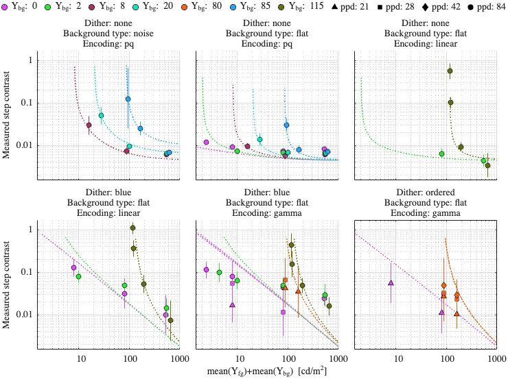
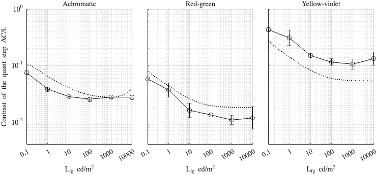

Fitting config: dither, model: transducer
Fitting error (RMSE): 2.25586
Model parameters
p.beta = 1.17309; p.beta_cc = 1; p.gs_num = [ 0.549859 0.2 0.964983 ]; p.noise_params = [ 0.262086 0.5 0.409297 0.208924 0.597314 ]; p.dither_mask_params = [ 0.00284337 0.988975 0.936937 ]; p.blue_dither_params = [ 40.1841 326.39 2.61142 2.12121 ];
Dataset: [ar2025]
Scaling factor: 0.344039

Dataset: [kim2020]
Scaling factor: 1.09523
